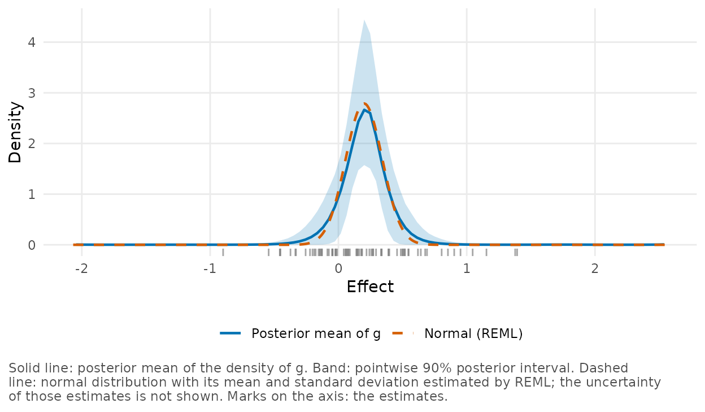
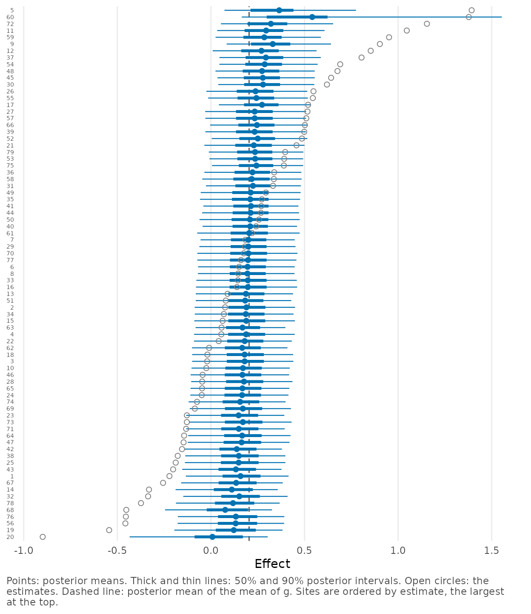
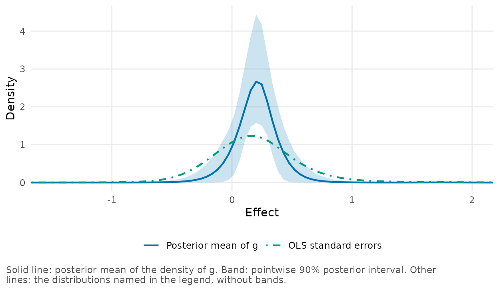

This case study analyzes a multisite trial with bayesEfron, from the
students’ test scores to what we would report. A multisite trial runs
one experiment in many places, which the package calls sites, so it can
tell us more than whether the treatment works on average. Raudenbush and Bloom (2015) name three things to learn
about the site effects: their mean, how much they vary, and the effect
at each site. bayesEfron estimates all three from one estimate and one
standard error for each site, as vignette("bayesEfron")
describes. We follow them through a large experiment in education, and
end up less sure of the second than a first look at the fit
suggests.
Tennessee’s Project STAR assigned students and teachers at random, within each of 79 schools, to small classes or to regular classes, the regular ones with or without a teacher’s aide. The design called for 13 to 17 students in a small class and 22 to 25 in a regular one (Achilles et al. 2008; Finn and Achilles 1990). Students in small classes did better on average. Published analyses disagree about whether they did better by the same amount in every school: Nye et al. (2000) concluded that the effects were quite consistent across schools, whereas Konstantopoulos (2011) concluded that they varied significantly across schools in every grade. We use the data from kindergarten, the first of the experiment’s four years.
From students to one estimate for each school
To fit the model we need an estimate and a standard error for each
school, not the students’ scores, so we first have to compute them. A
multisite trial adds this step to a meta-analysis, where both are taken
from published reports. The data set star_schools has the
result, and we print the first rows of some of its columns.
head(star_schools[, c("site", "location", "yi", "sei", "n_students",
"n_classes", "n_classes_small")])
#> site location yi sei n_students n_classes n_classes_small
#> 1 1 urban -0.22151425 0.4924872 52 3 1
#> 2 2 rural 0.07580528 0.4930496 51 3 1
#> 3 3 rural -0.02022031 0.4980018 54 3 1
#> 4 4 suburban 0.05546138 0.4962996 58 3 1
#> 5 5 rural 1.39287138 0.4894715 59 3 1
#> 6 6 suburban 0.15082600 0.3991840 71 4 2yi is the difference between a school’s small classes
and its regular classes, with or without an aide, in a composite of the
reading and mathematics scores at the end of kindergarten. Its unit is
the standard deviation of the composite among the students who have both
scores. sei is its standard error, the subject of the rest
of this section. See ?star_schools for the source of the
data.
In all, the sample has 5,786 students in 325 classes, which is a lot for the mean effect but not much for any one school. A school has 73 students on average, and most schools have 3 to 5 classes: 35 schools have a single small class, and 41 have two.
Classes matter because students in the same class have the same teacher and the same room, so their scores are alike for reasons that have nothing to do with the size of the class. In a school with one small class, the difference between that class and the others is also the difference between one teacher and the others. A standard error that treats the students as independent ignores this. The mixed model below takes it into account. It has an intercept and a small-class contrast for each school and a random intercept for each class, and it is fitted to all the schools at once with the lme4 package (Bates et al. 2015).
# One row for each student: the composite `y`, the indicator `small`, and
# factors for the school and the class.
model <- lme4::lmer(y ~ 0 + school + school:small + (1 | class),
data = students)The 79 coefficients of school:small are the estimates in
yi, and sei has their standard errors. In the
source repository, the script data-raw/star.R builds
star_schools in this way from the public data file. The
mixed model estimates a standard deviation of 0.34 between classes of
the same kind in a school and of 0.83 between the students of a
class.
Because these two numbers are common to all the schools, a school’s
standard error is determined by the number and sizes of its small and
regular classes. It is between 0.46 and 0.57 for the schools with one
small class, and between 0.34 and 0.43 for the schools with two. Another
column, sei_ols, is the standard error that ordinary least
squares (OLS) gives the same contrast within a school, with the students
treated as independent. It is smaller for every school, and for the
median school the standard error from the mixed model is 1.9 times as
large.
Like other analyses of this kind, the model that we fit next treats the standard errors as known. Here they depend on the variance between classes, which is estimated with 167 degrees of freedom (the number of classes minus the number of groups of classes of the same kind in a school), and on the assumption that this variance is the same for small and regular classes and in every school. We come back to both in the section on the standard errors.
A fit with one remaining warning
We fit the model with the call below. It sets four sampler arguments, and most of this section explains why.
fit <- bayes_efron_fit(star_schools, seed = 1985, adapt_delta = 0.99,
max_treedepth = 12, iter_warmup = 2000,
iter_sampling = 6000)We ran this call in advance and saved the fit, thinned to 1 draw in 30. The next chunk reads it from a file beside the source of this article.
fit <- readRDS("class-size-fit.rds")
fit
#> <bayesEfron fit>
#> Model family: RE
#> Sites: 79
#> Grid method: pilot
#> Runtime: 2.16 sec
#> Draws: 800 (4 chains, one iteration in 30 kept); site-level draws not kept
#> Diagnostics: Rhat 1.002; ESS bulk 1312; ESS tail 1326; divergences 0; treedepth hits 0
#> Warnings: ebfmi
#> Standard errors: 0.2843 to 0.5684 (largest / smallest 1.999)
#> Grid: 101 points from -2.044 to 2.539; smallest standard error 6.204 grid spacings
#> Grid range: rule "pilot", not narrowed (the range of "paper_realdata"); point masses; 6 spline functions
#> Next: summary() and site_summary() for the sites, g_summary() for the distribution of effects, plot().The output has a Warnings line, which lists
ebfmi, the E-BFMI diagnostic of the sampler.
The four arguments are a response to what the defaults did with these
data. To show this, we ran bayes_efron_fit(star_schools)
with 6 different seeds, and then the call above with the same seeds. The
diagnostics and summaries of these 12 runs are in evidence,
a list of results that we computed in advance for this article. We read
it and print the runs with the defaults.
evidence <- readRDS("class-size-evidence.rds")
runs <- evidence$runs
show_runs <- function(x) {
data.frame(seed = x$seed, ebfmi_min = round(x$ebfmi_min, 2),
max_rhat = round(x$max_rhat, 3),
min_ess_bulk = round(x$min_ess_bulk),
divergences = x$divergences, treedepth_hits = x$treedepth_hits,
mean_g = round(x$mean_g, 3), sd_g = round(x$sd_g, 3))
}
show_runs(runs[runs$setting == "defaults", ])
#> seed ebfmi_min max_rhat min_ess_bulk divergences treedepth_hits mean_g sd_g
#> 1 1985 0.27 1.006 804 0 5 0.204 0.202
#> 2 1 0.19 1.003 620 0 7 0.204 0.199
#> 3 2 0.26 1.007 693 0 8 0.204 0.195
#> 4 3 0.29 1.004 883 0 0 0.204 0.201
#> 5 4 0.18 1.002 586 0 18 0.204 0.194
#> 6 5 0.19 1.002 723 1 3 0.205 0.198In every run at least one chain has an E-BFMI below 0.3
(ebfmi_min is the smallest of the 4 chains). In 5 of the 6
runs some iterations reach the maximum tree depth, and one run has a
divergent transition, which diagnose() counts as a failed
check. vignette("diagnostics") gives the remedies:
- a higher
adapt_delta(a smaller step size) for divergent transitions, - a higher
max_treedepthfor iterations at the maximum tree depth, - a longer run (
iter_warmupanditer_sampling) for effective sample sizes or an R-hat near their thresholds.
The four arguments in our call apply all three. In runs
these settings are labeled "stored", and the same 6 seeds
now give the following.
show_runs(runs[runs$setting == "stored", ])
#> seed ebfmi_min max_rhat min_ess_bulk divergences treedepth_hits mean_g sd_g
#> 1 1985 0.22 1.002 1312 0 0 0.204 0.200
#> 2 1 0.27 1.003 1118 0 0 0.204 0.196
#> 3 2 0.25 1.005 1189 0 0 0.204 0.196
#> 4 3 0.24 1.002 1161 0 5 0.204 0.197
#> 5 4 0.26 1.003 1505 0 0 0.204 0.200
#> 6 5 0.24 1.003 1300 0 1 0.204 0.197No run has a divergent transition, every R-hat is below 1.01, and the smallest effective sample size is above 1,100. In 2 runs a few iterations still reach the maximum tree depth, at most 5 of 24,000. But the E-BFMI stays below 0.3 in every run, with either setting.
A low E-BFMI means that the chains move slowly between the high and
the low levels of the log density, as
vignette("diagnostics") explains. It is a warning about how
well the sampler explores, and it is there in all 12 runs. What we can
check is whether the results depend on the run. Over the 12 runs the
mean of \(g\), the distribution of the
effects, is 0.204 or 0.205, its standard deviation is between 0.194 and
0.202, and each limit of the 90% interval for that standard deviation
varies by less than 0.015. So the summaries are stable across seeds and
settings. That does not show that the sampler has explored all of the
posterior distribution, and a report of the fit should say that the
warning was there.
When the same 79 schools are given the OLS standard errors, which are about half as large, the warning is not there: a fit with the defaults then has an E-BFMI of 0.67 and no warning of any kind. The simulation below shows which data sets of this design have the warning and which do not.
The mean and the spread of the effects
We plot the estimate of \(g\) with
plot_g(), and add marks for the 79 estimates and, as a
dashed curve, the normal model fitted to them by restricted maximum
likelihood (REML).
plot_g(fit, observed = "rug", normal = TRUE)
The two curves nearly coincide. For the numbers we use
confint() with type = "g", which gives the
mean, the variance and the standard deviation of \(g\), each with a 90% interval.
confint(fit, type = "g")
#> 90% posterior intervals (equal-tailed)
#> parameter mean lower upper site point
#> 1 mean_g 0.20396094 0.123966403 0.2877060 mean_g 0.20396094
#> 2 var_g 0.04778219 0.007079281 0.1245274 var_g 0.04778219
#> 3 sd_g 0.20127688 0.084138216 0.3528791 sd_g 0.20127688We estimate the mean of the effects at 0.20 standard deviations of the composite, with a 90% interval from 0.12 to 0.29, and the normal model puts it at 0.20 as well. This is the part of the answer that the data determine well.
The same cannot be said of the spread. For the standard deviation of \(g\) the fit gives 0.20, with an interval from 0.08 to 0.35. The REML estimate is 0.14. The test of homogeneity that goes with the normal model does not reject: its statistic is 82.8 on 78 degrees of freedom, a p-value of 0.33.
It is tempting to read the first of these numbers as a finding that
the effect differs from school to school by about 0.2. The interval does
exclude zero, but it could not include it: \(g\) is a smooth density on the grid, so its
standard deviation is positive whatever the data are.
diagnose() puts the number in context: its
grid component has this standard deviation
(sd_g) beside its prior distribution on the same grid
(sd_g_prior).
diagnose(fit)$grid[c("sd_g", "sd_g_prior")]
#> $sd_g
#> mean q5 q95
#> 0.20127688 0.08413822 0.35287905
#>
#> $sd_g_prior
#> q5 q50 q95
#> 1.103622 1.327093 1.451000On this grid the standard deviation of \(g\) is about 1.3 before the data and 0.2
after them. So the data have moved it most of the way toward zero, but
we cannot learn from the fit itself how much further the model would let
it go. The same is true of what follows from the spread, such as the
proportion of schools in which small classes do harm, which
g_summary() gives as the probability that \(g\) puts below zero.
g_summary(fit, type = "prob", upper = 0)
#> from to mean lower upper
#> 1 -Inf 0 0.1134423 0.005750584 0.2718487The fit puts this proportion at 11%, with a 90% interval from 0.6% to 27%. To learn how to read numbers like these, we turn to simulated data, for which the true spread is known.
Simulating trials like this one
We simulated data sets with the 79 standard errors of these schools. In every case the true effects have the mean that REML estimates for the schools, and their spread follows one of four cases:
- no variation, so that every school has the same effect,
- normal, with the REML estimate of the standard deviation (0.14),
- normal, with the posterior mean of the standard deviation of \(g\) (0.20),
- normal, with the upper limit of the 90% interval for that standard deviation (0.35).
We drew 200 data sets for each case and fitted each of them twice
with bayes_efron_fit(), with the sampler settings of the
second section and with the defaults. We also fitted the normal model by
REML and then took its mean and standard deviation as known, which is a
plug-in analysis.
We read the summary of the simulation from a file. The first table is
about the spread of the effects, for the fits with the settings of the
second section (bayesEfron) and the plug-in normal model
(normal).
sims <- read.csv("class-size-samples.csv", check.names = FALSE)
shown <- sims[sims$method %in% c("bayesEfron", "normal"), ]
data.frame(effects = shown$scenario, analysis = shown$method,
sd = round(shown$sd_mean, 2), sd_q05 = round(shown$sd_q05, 2),
sd_q95 = round(shown$sd_q95, 2), sd_zero = shown$sd_zero,
sd_inclusion = shown$sd_inclusion)
#> effects analysis sd sd_q05 sd_q95 sd_zero sd_inclusion
#> 1 no variation bayesEfron 0.18 0.13 0.24 0.000 0.000
#> 2 no variation normal 0.07 0.00 0.21 0.465 NA
#> 3 normal, SD 0.14 bayesEfron 0.21 0.14 0.29 0.000 0.925
#> 4 normal, SD 0.14 normal 0.13 0.00 0.27 0.250 NA
#> 5 normal, SD 0.20 bayesEfron 0.24 0.16 0.36 0.000 0.945
#> 6 normal, SD 0.20 normal 0.19 0.00 0.32 0.080 NA
#> 7 normal, SD 0.35 bayesEfron 0.38 0.26 0.50 0.000 0.955
#> 8 normal, SD 0.35 normal 0.35 0.23 0.44 0.000 NAThe columns are as follows.
-
sdis the estimated standard deviation of the effects, averaged over the data sets: the posterior mean of the standard deviation of \(g\) for bayesEfron, the REML estimate for the normal model. -
sd_q05andsd_q95are the 5% and 95% quantiles of those estimates. -
sd_zerois the proportion of data sets in which the estimate is zero. -
sd_inclusionis the coverage of the 90% interval for the standard deviation, the proportion of data sets in which it contains the true value.
When every school has the same effect, the fit still reports a
standard deviation of 0.18 on average, and a value between 0.13 and 0.24
in 90% of the data sets. The value for the real schools, 0.20, is inside
that range. The column own_as_large of the summary is the
proportion of data sets with a posterior mean at least as large as the
one for the real schools.
shown <- sims[sims$method == "bayesEfron", ]
data.frame(effects = shown$scenario, own_as_large = shown$own_as_large)
#> effects own_as_large
#> 1 no variation 0.255
#> 2 normal, SD 0.14 0.480
#> 3 normal, SD 0.20 0.685
#> 4 normal, SD 0.35 0.990A posterior mean that large occurred in 25.5% of the data sets without any variation, and in 48.0% and 68.5% of those with standard deviations of 0.14 and 0.20. The fit of the 79 schools therefore does not show that the effect of small classes varies. It does limit how large the variation can be: when the true standard deviation was 0.35, a posterior mean as small as the one for the schools occurred in 1.0% of the data sets. These percentages compare the simulated fits with 0.201, the posterior mean of the 800 stored draws. If we compare with 0.200, from all the draws of the same run, the first three become 26.5%, 50.0% and 69.5%.
We should read the interval for the standard deviation in the same way. It contained the true value in 92.5%, 94.5% and 95.5% of the data sets in the three normal cases, and in none of those without variation, where its lower limit was 0.08 on average. Its upper limit can be used, but its lower limit is not evidence against zero. REML errs in the other direction: it estimates the standard deviation as zero in 46.5% of the data sets without variation, and still in 25.0% of those with a standard deviation of 0.14.
The next table is about the individual schools. It adds the rows
called known g, for an analysis that is given the
distribution that the effects come from, which is possible only in a
simulation. Without variation that distribution is the common effect
itself, so this case has no such row.
shown <- sims[sims$method != "bayesEfron, defaults", ]
data.frame(effects = shown$scenario, analysis = shown$method,
inclusion = round(shown$inclusion, 3),
length = round(shown$length, 2),
largest_inclusion = shown$largest_inclusion,
largest_error = round(shown$largest_error, 2))
#> effects analysis inclusion length largest_inclusion largest_error
#> 1 no variation bayesEfron 0.998 0.51 0.975 0.15
#> 2 no variation normal 0.513 0.22 0.490 0.06
#> 3 normal, SD 0.14 bayesEfron 0.929 0.56 0.945 0.10
#> 4 normal, SD 0.14 normal 0.633 0.38 0.615 0.02
#> 5 normal, SD 0.14 known g 0.897 0.44 0.955 0.00
#> 6 normal, SD 0.20 bayesEfron 0.885 0.62 0.955 0.06
#> 7 normal, SD 0.20 normal 0.775 0.54 0.795 0.00
#> 8 normal, SD 0.20 known g 0.899 0.60 0.915 0.00
#> 9 normal, SD 0.35 bayesEfron 0.875 0.86 0.940 0.07
#> 10 normal, SD 0.35 normal 0.877 0.87 0.835 -0.01
#> 11 normal, SD 0.35 known g 0.905 0.89 0.910 -0.01inclusion is the coverage of the schools’ 90% intervals,
that is, the proportion of the true effects inside them, and
length is their mean length. The other two columns follow
one school in each data set, the one with the largest estimate:
largest_inclusion is how often its interval covers its true
effect, and largest_error is the average difference between
its posterior mean and its true effect.
In the four cases the bayesEfron intervals contained 99.8%, 92.9%, 88.5% and 87.5% of the true effects, with Monte Carlo standard errors below 0.5 percentage points. They are longer than they need to be when the effects do not vary, and they fall short of the nominal 90% by 1.5 and 2.5 percentage points when the standard deviation is 0.20 and 0.35. For the plug-in normal model the intervals contained 51.3%, 63.3%, 77.5% and 87.7%, because that analysis takes its two estimates as known, and where REML estimates no variation, every interval is a single point.
These percentages are averages over all the data sets of a case, and the fit of the real schools is not an average one: the standard deviation that it reports is on the low side for data with a true standard deviation of 0.20. Among the data sets in which the fit reported a standard deviation no larger than the one for the real schools (149, 104 and 63 data sets in the first three cases), the intervals contained 99.9%, 90.5% and 81.9% of the true effects. When the effects varied with a standard deviation of 0.20 and the data happened not to show it, the intervals for the schools were too short.
For the school with the largest estimate in a data set, the posterior mean was too high on average in all four cases, by 0.06 to 0.15, and by the most when the effects did not vary. Its interval contained its true effect in at least 94% of the data sets in every case.
We can also use the simulation to compare the two sampler settings. Under the settings of the second section, none of the 800 fits had a divergent transition or a bulk effective sample size below 400, 7 had an R-hat above 1.01, and in 245 some iterations reached the maximum tree depth. Under the defaults, 129 fits had divergent transitions and 73 an R-hat above 1.01. Even so, the summaries barely depended on the setting. Between the two, the posterior mean of the standard deviation of \(g\) differed by less than 0.02 in every data set, and the proportion of true effects inside the intervals by less than 0.001 on average and by at most 2 of the 79 schools in any data set.
As for the E-BFMI, it was below 0.3 in 192 of the 200 fits without variation and in 15 of the 200 with a standard deviation of 0.35. Within each case it was lower when the estimate of \(g\) was narrower: its correlation with the posterior mean of the standard deviation of \(g\) is between 0.64 and 0.90. In these data sets, then, a low E-BFMI went with a narrow estimate of \(g\). We cannot tell from these runs whether the model could be written so that it samples such data without the warning. A narrow estimate of \(g\) is also the condition under which the school intervals were too short, and the two show the same pattern. When the standard deviation was 0.20, the intervals contained 86.2% of the true effects among the fits with a low E-BFMI and 93.7% among the others.
The schools one by one
plot_sites() plots the posterior mean and the intervals
of every school, and we order the schools by their estimates.
plot_sites(fit, sort_by = "observed")
The open circles are the estimates, which run from -0.90 to 1.39, and the points are the posterior means, which run from 0.01 to 0.54. For the median school, the posterior mean lies 14% of the way from the mean of \(g\) to the estimate. On average the 90% intervals have a length of 0.55, whereas intervals from the estimates and their standard errors alone would have a mean length of 1.41.
exceedance_prob() returns the posterior probability that
each school’s effect is above a threshold, here zero. We print the range
of these probabilities and count the 90% intervals that lie above
zero.
positive <- exceedance_prob(fit, threshold = 0)
range(positive)
#> [1] 0.6173382 0.9981035
sum(site_summary(fit)$lower > 0)
#> [1] 15For every school the probability of a positive effect is at least 0.61, and for 15 schools the 90% interval lies above zero. These numbers describe schools with a common positive mean more than they distinguish one school from another. In the simulated data sets in which every school had the same effect, the number of intervals that excluded zero was anywhere between 1 and 72 in 90% of the data sets, depending on where the mean of the estimates happened to fall.
Schools 5 and 60 have the two largest estimates, and
site_summary() returns their rows.
site_summary(fit, sites = c(5, 60))[, c("label", "estimate", "se", "mean",
"lower", "upper")]
#> label estimate se mean lower upper
#> 1 5 1.392871 0.4894715 0.3648946 0.07233201 0.7751082
#> 2 60 1.377682 0.3411342 0.5410652 0.16494242 1.5540486School 5, with 3 classes, has the largest estimate, which the fit shrinks to a posterior mean of 0.36, with an interval from 0.07 to 0.78. In the simulation, the posterior mean of the school with the largest estimate was too high on average, but its interval contained the true effect at least as often as its nominal 90%. For a school like this one we would therefore report the interval.
School 60 has 7 classes and a smaller standard error, and its estimate is shrunk less. Its posterior distribution has a long right shoulder: the interval runs from 0.16 to 1.55, and it is longer than the 1.12 of an interval from the estimate and its standard error alone.
The upper limit of that interval is the least stable number in the fit. Computed from all the draws of the run instead of the 800 stored ones, it is 1.49. The upper limits for both schools also depend on what is assumed about the classes: under the assumptions compared in the next section, the upper limit for school 5 lies between 0.59 and 1.23, and the upper limit for school 60 between 0.82 and 1.66.
Varying the standard errors
Suppose that we had ignored the classes and analyzed each school by
OLS, with its students treated as independent. We would then fit the
model to the columns yi_ols and sei_ols.
ols <- as_bef_data(star_schools, theta_hat = "yi_ols", sigma = "sei_ols")
fit_ols <- bayes_efron_fit(ols, seed = 1985)The results of this fit are in evidence$ols, and
plot_g() adds its estimate of \(g\) to our plot through the
compare argument.
ols <- evidence$ols
plot_g(fit, compare = list(
"OLS standard errors" = data.frame(x = ols$density$value,
density = ols$density$mean)
), xlim = c(-1.5, 2))
With the OLS standard errors the standard deviation of \(g\) is 0.41, with an interval from 0.31 to 0.53, twice as large as in the fit above. REML now estimates 0.35, the test of homogeneity rejects with a p-value below \(10^{-20}\), and 26 school intervals exclude zero, 3 of them on the negative side, compared with 15 in the fit above, all on the positive side. The mean of the effects is almost unchanged, at 0.19.
Between the two analyses the estimates are almost the same, with a correlation of 0.997. It is the standard errors that differ, because the two analyses answer different questions. OLS takes the classes that were formed as given, and its contrast is the difference between those classes. The mixed model with class intercepts estimates what the difference would be with other teachers and other classes in the same school, which is what an effect of class size means. What the smaller standard errors leave out, the differences between the teachers and the classes of a school, is counted as variation in the effect of small classes.
We have not reproduced either of the analyses cited at the start, and we cannot say what part the standard errors play in their disagreement. In our analysis of one grade, the standard errors that ignore the classes would have shown strong variation, whereas the standard errors of the fit above, which take the classes into account, do not show any.
The standard errors that take the classes into account are estimates
too, and we can vary what they depend on in the same way. The results
for four versions of them are in evidence$first_stage,
labeled in the first column of the table.
variants <- evidence$first_stage
data.frame(classes = c("one variance", "variance at its lower end",
"variance at its upper end", "a variance for each kind"),
se = round(variants$se_ratio_median, 2),
reml_sd = round(variants$reml_sd, 2), p = round(variants$p, 3),
sd_g = round(variants$sd_g, 2), lower = round(variants$sd_g_lower, 2),
upper = round(variants$sd_g_upper, 2),
ebfmi_min = round(variants$ebfmi_min, 2))
#> classes se reml_sd p sd_g lower upper ebfmi_min
#> 1 one variance 1.00 0.14 0.334 0.20 0.08 0.35 0.22
#> 2 variance at its lower end 0.90 0.21 0.042 0.24 0.12 0.40 0.33
#> 3 variance at its upper end 1.11 0.00 0.813 0.17 0.06 0.32 0.19
#> 4 a variance for each kind 1.11 0.00 0.815 0.17 0.07 0.32 0.20- The first row is the fit of this case study, here with all the draws of its run. Its standard errors depend on a standard deviation of 0.34 between classes, with a 95% interval from 0.30 to 0.40.
- In the second and third rows that standard deviation is at the limits of the interval.
- In the fourth row the small and the regular classes each have their own variance. That mixed model fits the students better, with a likelihood-ratio statistic of 5.4 on 1 degree of freedom (a p-value of 0.02), and it estimates a standard deviation of 0.44 between small classes and 0.31 between regular ones.
se is the median over the schools of the ratio of the
standard error to the standard error in the first row.
reml_sd and p are the REML estimate of the
standard deviation of the effects and the p-value of the test of
homogeneity, and the next three columns are the posterior mean and the
90% interval of the standard deviation of \(g\).
When the variance between classes is at the lower end of its interval, the test of homogeneity rejects at the 5% level, and the fit has no warning about E-BFMI. Under either of the other two assumptions, REML estimates no variation at all. The statement that these data do not show variation therefore fails in one of the four rows, and it depends on a standard deviation between classes that the data place only between 0.30 and 0.40. In every row, the upper limit of the interval for the standard deviation of the effects is at most 0.40.
We also fitted a model to the students that estimates the variance of the effect across schools in one step, with the class intercepts of the first row. It gives a standard deviation of 0.16 and a likelihood-ratio statistic of 0.66 for the hypothesis of no variation, which is no evidence against that hypothesis.
For a multisite trial, the two comparisons in this section show where care is needed. Whether the effect appears to vary depends first on how the standard errors are computed and on how well the variances behind them are known, and only then on the model for the distribution of effects.
Reporting this trial
The simulation has limits that we should keep in view: one set of 79 standard errors treated as known, normal distributions of the effects, normal sampling errors, and effects unrelated to their precision. Within those limits, we would report three things for these schools.
- The mean effect with its interval, which is the result that the data determine well.
- For the spread, the upper limit of the interval and not the posterior mean. The standard deviation of the effects is unlikely to exceed 0.35, or 0.40 with the variance between classes at the lower end of its interval, and the data do not show that it differs from zero. In the simulation, the model returned a posterior mean between 0.18 and 0.24 on average whether the true standard deviation was zero or 0.20.
- For a school, the interval, with a caution. When the effects varied with a standard deviation of 0.20 and the fit reported a standard deviation no larger than the one for these schools, the intervals contained 82% of the true effects. The number of intervals that exclude zero tells us nothing about the schools.
A report should also say how the standard errors were computed and how well the variance behind them is known, because the conclusion about the spread depends on them. And it should say that the sampler issued a warning, with the checks that were made: several seeds, a longer run, and a comparison of the summaries.
As in vignette("teacher-expectancy"), the plug-in normal
model is not the safer choice. Its intervals for the schools contained
51.3%, 63.3%, 77.5% and 87.7% of the true effects in the four cases. A
normal model that carries the uncertainty in its variance was not part
of our comparison.
Finally, the fit in this article is thinned to 800 of its 24,000 draws. For a report, run the call at the top of the second section as it is, which stores every draw.